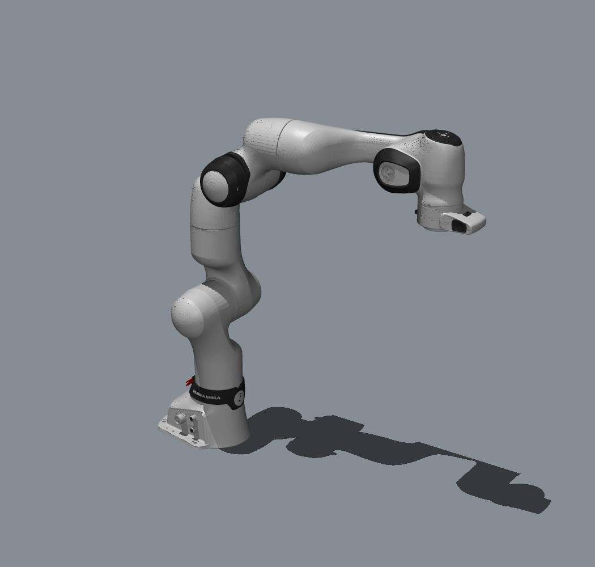
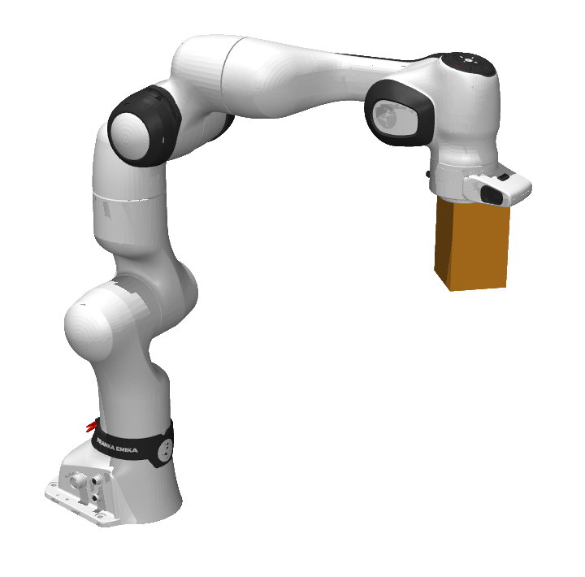
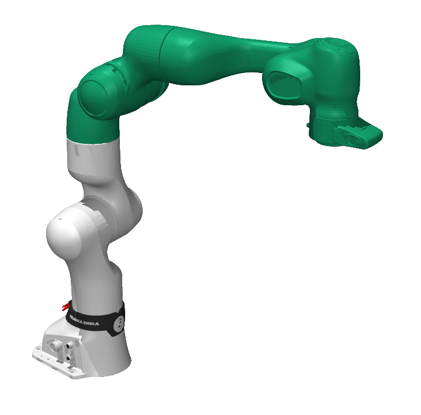
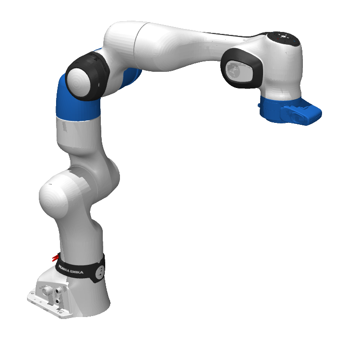
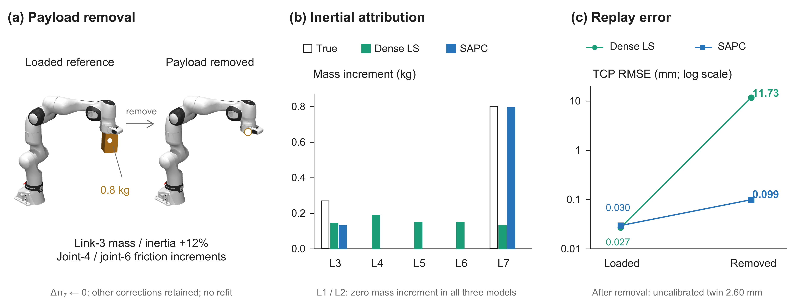
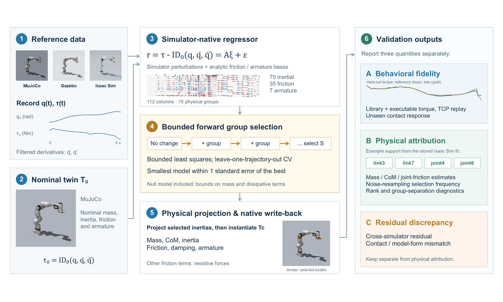
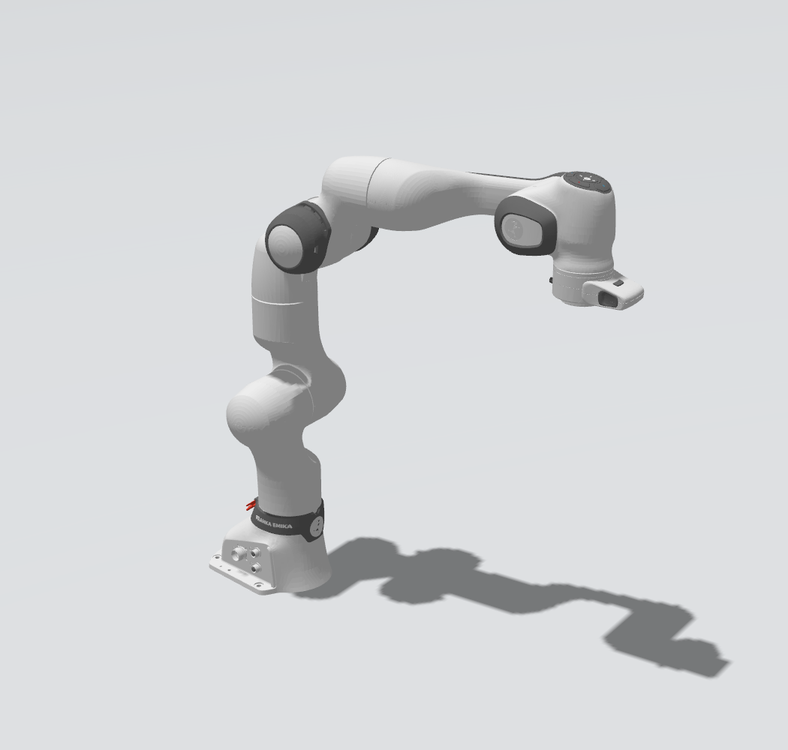
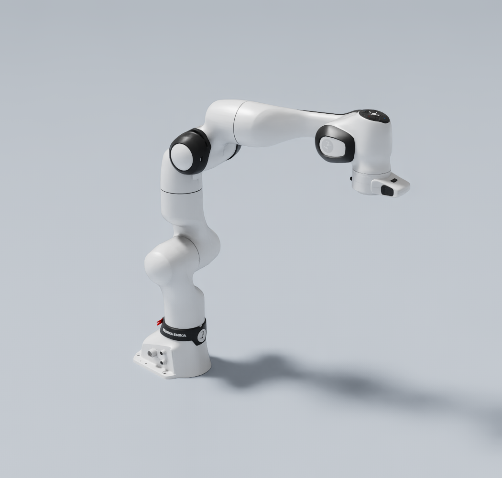
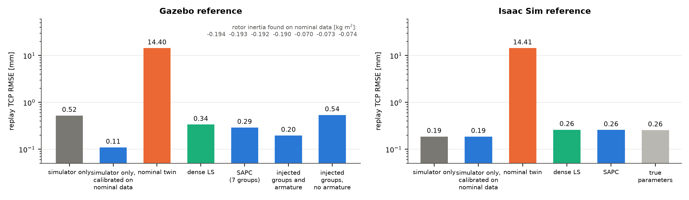
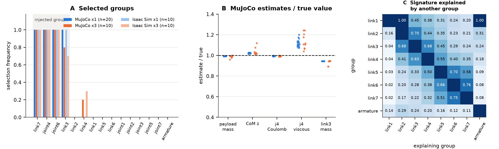

{kind=link}
{kind=link}

Controlled identification
MuJoCo → MuJoCo
Exact injected ground truth separates parameter recovery from output agreement.
Robot digital twins · Physical attribution
Structure-Aware Calibration
of Robot Digital Twins
Robot Control and Intelligence Laboratory
Kyung Hee University
A twin can reproduce the motion while putting the correction in the wrong part of the robot.

0.8 kgKnown payloadFR3 / CONTROLLED REFERENCEThe central question
These are different questions. Dense calibration and SAPC both reproduce held-out motion to about 0.03 mm. Their explanations of an injected 0.8 kg payload are very different.


MuJoCo controlled study, measurement noise ×1. Colored bodies have fitted mass increments above 0.01 kg; color identifies location, not magnitude. All robot views use a common static pose. The payload block is a visual proxy for the injected inertial parameters.
The consequence of attribution
Remove the payload from the reference. Clear only the identified link-7 increment from each calibrated twin, without refitting. The other physical changes remain.
Switch between the loaded and edited twins.
After removal, mass corrections assigned to other links stay behind in the dense twin.
Noise ×1, held-out seeds 11 and 12. The unloaded reference still contains the link-3 and joint-4/joint-6 discrepancies; it is not the fully nominal negative control. Download these values (JSON).

The research
Digital twins of robots are validated by how closely they reproduce measured trajectories, torques and interaction forces. This paper shows that such behavioral fidelity does not establish that the twin contains the right physics, and proposes a calibration and validation protocol that keeps the two apart. On a 7-DoF manipulator with exactly known injected discrepancies, dense re-identification, with or without physically consistent inertias, and the proposed structure-aware calibration reproduce held-out and faster motions to about 0.03 mm and an unseen press task within 1 ms in contact onset and 3 % in holding force. Yet the dense twins attribute an injected 0.8 kg payload to 0.13 kg spread over neighbouring links, whereas the proposed calibration recovers 0.79 kg at the correct location. The competing corrections differ by a structurally null direction, so no free-space test separates them; once the payload is removed from the twins, the dense ones miss the unloaded reference by about 12 mm, worse than no calibration, and the structure-aware one by 0.1 mm. The method selects body and joint corrections from a simulator-derived regressor, admitting the uncorrected twin, and writes them back into an executable simulator model. Against Gazebo and Isaac Sim references it recovers the injected payload and friction, identifies the rotor inertia missing from the Gazebo description from nominal data alone, and returns no correction where nothing changed. Twin validation should therefore report behavioral fidelity, physical attribution and residual model-form discrepancy separately, and test the twin under the edits it will undergo in service.
Structure-aware physical calibration
SAPC updates an existing twin under a sparse-change prior: a payload, a worn joint or a replaced component changes only a few physical groups.
Subtract nominal inverse dynamics from measured torque. Extract an inertial regressor from the simulator and add friction and armature terms.
Bounded forward selection with trajectory-wise cross-validation chooses a small set of links and joints. The uncorrected twin is a candidate too.
Project selected inertias to physically consistent values, then write the corrections into native simulator fields.

The FR3 has 70 inertial parameters but only 43 independent torque-relevant combinations. Structural null directions can change the parameter attribution without changing free-space dynamics. A prior chooses a physical explanation; validation must also report where that explanation is not identifiable.
Controlled and cross-engine validation
The calibrated twin is always MuJoCo. The references share the same FR3 description and injected discrepancies, while their solvers and representational details differ.

Exact injected ground truth separates parameter recovery from output agreement.

Calibration also identifies the rotor inertia missing from the SDF description.

With armature preserved, SAPC selects exactly the four injected groups.
| Reference | Dense TCP mm | SAPC TCP mm | Dense payload kg | SAPC payload kg |
|---|---|---|---|---|
| MuJoCo | 0.027 | 0.030 | 0.130 | 0.794 |
| Gazebo / DART | 0.34 | 0.29 | 0.131 | 0.797 |
| Isaac / PhysX | 0.26 | 0.26 | 0.131 | 0.795 |

Stability and a negative control
Keep the reference trajectories fixed and resample only measurement noise. The payload and both friction groups remain selected in every realization at both noise levels.
| Reference / noise | Realizations | link3 | link4 |
|---|---|---|---|
| MuJoCo ×1 | 20 | 20 / 20 | 0 / 20 |
| PhysX ×1 | 10 | 10 / 10 | 0 / 10 |
| MuJoCo ×3 | 10 | 8 / 10 | 2 / 10 |
| PhysX ×3 | 10 | 7 / 10 | 3 / 10 |
On nominal PhysX data, SAPC returns the uncorrected twin in all 10 noise realizations. At high noise, link3 can be replaced by its near-aliased neighbor link4. Selection frequency reports this uncertainty; it is not a probability of correctness.

What the evidence supports
Dense and structure-aware twins also predict an unseen probe–plate press almost identically. Task success alone still does not establish correct physical attribution.
This study uses controlled simulators and one FR3 manipulator family. It does not establish hardware performance. Attribution depends on the sparse-change prior, and near-aliased or structurally null directions limit what can be recovered. The PhysX reference uses an analytic friction law shared with the library; contact laws and solvers still differ.
Paper, code and research artifacts
Full method, controlled studies, cross-engine comparisons and limitations.
Source codeIdentification, native write-back, benchmarks and simulator collection scripts.
Data & modelsResult JSONs, fixed cross-engine trajectories, generated worlds and the FR3 model.
The MuJoCo excitation data can be regenerated from the fixed seeds using the supplied scripts. Cross-engine logs are included to support identification without rerunning either reference simulator. Model assets retain their original MuJoCo Menagerie license.
Reference
Citation for the research manuscript.
@misc{park2026sapc,
title = {Fidelity Is Not Identification: Structure-Aware
Calibration of Robot Digital Twins},
author = {Park, Suhwan and Kim, Sanghyun},
year = {2026},
url = {https://rcilab.khu.ac.kr/sapc}
}{kind=link}